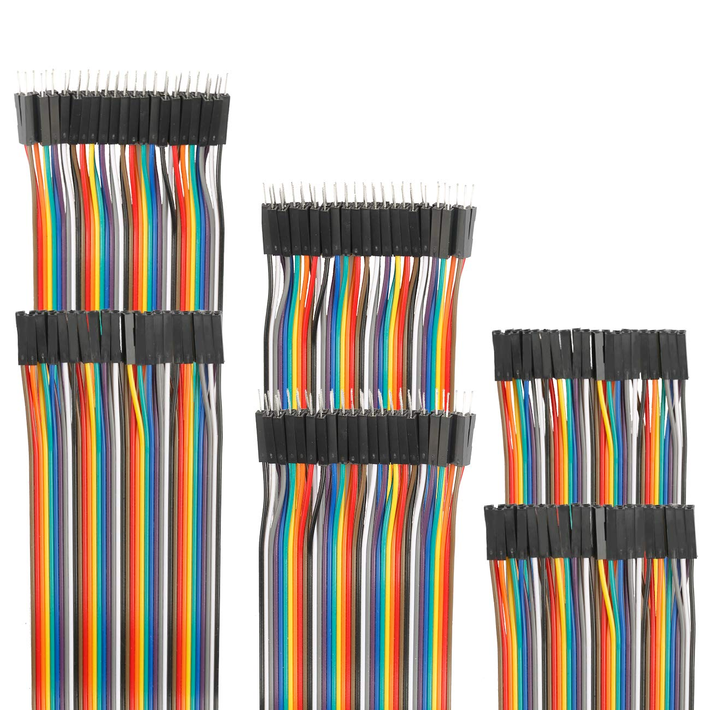
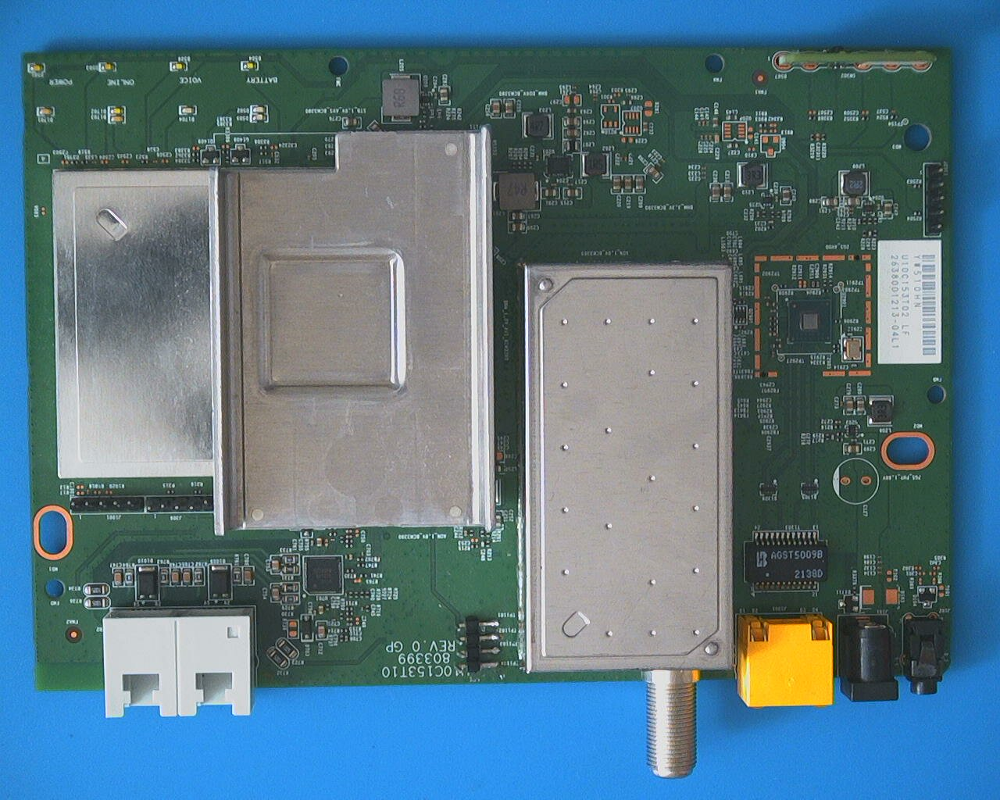

Thrift Store CTFs
Disregard Labs, Publish CVEs
Story Time
Can’t Stop Won’t Stop
| CVE# | CVSS v2 | CVSS v3 |
|---|---|---|
| CVE-2024-46437 | 5.0 | 6.5 |
| CVE-2024-46436 | 10.0 | 8.3 |
| CVE-2024-46435 | 5.5 | 8.8 |
| CVE-2024-46434 | 7.5 | 8.8 |
| CVE-2024-46433 | 9.7 | 8.8 |
| CVE-2024-46432 | 6.4 | 8.8 |
| CVE-2024-46431 | 7.5 | 8.0 |
| CVE-2024-46430 | 6.4 | 6.5 |
| CVE-2024-46429 | 9.7 | 8.8 |
| CVE# | CVSS v2 | CVSS v3 |
|---|---|---|
| CVE-2025-46635 | 6.1 | 8.1 |
| CVE-2025-46634 | 5.0 | 7.5 |
| CVE-2025-46633 | 5.0 | 7.5 |
| CVE-2025-46632 | 5.0 | 6.5 |
| CVE-2025-46631 | 9.4 | 9.8 |
| CVE-2025-46630 | 5.0 | 6.5 |
| CVE-2025-46629 | 8.5 | 6.5 |
| CVE-2025-46628 | 10.0 | 9.8 |
| CVE-2025-46627 | 7.8 | 8.2 |
| CVE-2025-46626 | 5.0 | 7.3 |
| CVE-2025-46625 | 10.0 | 8.8 |
Thrift Store CTFs
- Pick up devices from thrift store for cheap
- ???
- Profit (?)
Now own ~100 routers/modems/range extenders/IP cameras/NVRs/PLCs/4G range extenders/smart watches/security panels/networked speakers…
Shout out to U of MN Reuse locally
Still looking for good thrift stores that stock weird electronics
whoami
Matt ‘uturn’ Evans
10 years active duty Air Force
Spanning DCO, OCO, capability development; graduated NSA’s CNODP
CTF Enthusiast
- 1st Place, SANS Offensive Security CTF, BSides Charm, 2025
- 3rd Place, AWS Shmoocon CTF, 2025
- Most Valuable OSINT, TraceLabs Search Party, 2024
- Solver, NSA Codebreaker Challenge, 2021
- …More, older
PUBLISHED SECURITY RESEARCHER/CVE CONTRIBUTOR (you can be too!)
Talk Goals
- De-mystify hardware RE
- Give you guidance on tools and skill-ups
- Give you my workflow
- Common scenarios
- Encourage more participation in IoT research
De-Mystifying Hardware RE - Basic Equipment
Soldering Iron + Heat Gun
https://www.amazon.com/dp/B07BRQX15Z
Heat-Resistant Mat
https://www.amazon.com/dp/B08V51BPYV
Solder Flux
https://www.amazon.com/dp/B0BX62ZKJ2
Solder
https://www.amazon.com/dp/B0CP7NJTSK
Desolder Wick
https://www.amazon.com/dp/B094GZ6CPZ
Tweezers
https://www.amazon.com/dp/B073SJD7L5
DIP Headers
https://www.amazon.com/dp/B0CN14TP2T
Jumper/Dupont Wires

https://www.amazon.com/dp/B07GD2PGY4
CH341A
https://www.amazon.com/dp/B07VNVVXW6
Logic Analyzer
https://www.amazon.com/dp/B07K6HXDH1
USB UART Adapter
https://www.amazon.com/dp/B07WX2DSVB
Enameled Wire
https://www.amazon.com/dp/B08ZMP5GXD
- https://www.amazon.com/dp/B07BRQX15Z
- https://www.amazon.com/dp/B08V51BPYV
- https://www.amazon.com/dp/B0BX62ZKJ2
- https://www.amazon.com/dp/B0CP7NJTSK
- https://www.amazon.com/dp/B094GZ6CPZ
- https://www.amazon.com/dp/B073SJD7L5
- https://www.amazon.com/dp/B0CN14TP2T
- https://www.amazon.com/dp/B07GD2PGY4
- https://www.amazon.com/dp/B07VNVVXW6
- https://www.amazon.com/dp/B07K6HXDH1
- https://www.amazon.com/dp/B07WX2DSVB
- https://www.amazon.com/dp/B08ZMP5GXD
Last minute adds
- Screwdriver Kit
- I just use a generic kit
- Spudgers
- I use (and prefer) a 100-pack of guitar picks
- Magnifying Glass
- I stole the lenses from a children’s microscope, but I often resort to macro phone cameras
- Multimeter
De-Mystifying Hardware RE - Identifying Stuff

Workflow
Workflow
Assemble the Triforce
Firmware
Shell
Vulnerabilities
Getting Firmware
- Actual device, dumping flash
- Chip Clip - easy, but sometimes infeasible
- Chip Lift - still easy, almost certainly works, requires practice
- Vendor website
- Sometimes encrypted
- Sometimes partial
- OSINT
- Archive.org
- Unlisted endpoints/subdomains
- OEM/Support Partner Relationships
- Get shell on device,
dd if=/dev/mtd... - Get bootloader shell on device, dump manually
Getting Firmware - Archive.org
Getting Firmware - Unlisted Endpoints

Getting Firmware - Support Contracts
Unpacking Firmware
- EMBA - Embedded Analyzer - https://github.com/e-m-b-a/emba
- Binwalk - The old one; Ubuntu 22 docker container
- File Formats and Magic Bytes
- uImage
- SquashFS
- UBIFS
- imhex - Great hex editor
Getting Shell
- UART, telnet/ssh
- Sometimes free shell
- Sometimes Linux login
- Sometimes root///root
- Sometimes get password from firmware
- Sometimes bootloader
- Sometimes just output :(
- Find a vuln (known/unknown) and use it to pop shell
Finding Vulnerabilities
- Static analysis - Ghidra
- Dynamic analysis
- Linux Offsec
- statically-compiled gdbserver + gdb-multiarch
What Vulnerabilities to Find (scrollable page)
- Static passwords; /etc/passwd, /etc/shadow
- Tenda - Fireitup
- Firmware - check init process/scripts
- Password changes
- Tenda RX2 Pro salt+mac password
- Mounting USB/SD Card and running scripts
- Modem (unpopulated USB header)
- Undisclosed outdoor camera - SD card RCE
- Password changes
- Shell - check listening processes, SBOM
- Undisclosed router - UDP RCE through known-vulnerable application
- Shell - undisclosed WiFi SSIDs
- DEFCON 25 - CableTap - 2017 - Home ISP Security Networks
- Undisclosed Mesh Router - 8-character alphanumeric password
- Web server vulnerabilities
- Stack smashing
- Constantly
- System/popen calls/command injection
- Constantly
- Modem - Password of the Day
- DEFCON 25 - CableTap - 2017
- Undisclosed Cable Modem
- Stack smashing
- Cloud Management
- Deeply fragmented, big news
- Cryptographic Weakening
- Undisclosed VPN Router